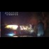

<html lang="en">
 <head>
<!-- Favicon -->
<link rel="shortcut icon" href="../../favicon.ico">
  <meta charset="utf-8"/>
  <title>
   Shock Video: Car Explodes After Border Patrol Agent Tasers Driver - Agents refuse to help as man burns to death
  </title>
  <meta content="Post on /v/Conspiracy from 2015-03-26 by OWNtheNWO." name="description"/>
  <meta content="Shock Video: Car Explodes After Border Patrol Agent Tasers Driver - Agents refuse to help as man burns to death" property="og:title"/>
  <meta content="Post on /v/Conspiracy from 2015-03-26 by OWNtheNWO." property="og:description"/>
  <link href="../../static/css/page.css" rel="stylesheet"/>
  <meta content="https://voat.conspiracy.hackliberty.org/thumbnails/8b/f6/8bf6e197-e7da-45ad-b9ab-16009f82c722.jpg" property="og:image"/>
  <meta content="https://voat.conspiracy.hackliberty.org/v/conspiracy/69289.html" property="og:url"/>
  <meta content="width=device-width, initial-scale=1" name="viewport"/>
  <link href="https://voat.conspiracy.hackliberty.org/v/conspiracy/69289.html" rel="canonical"/>
  <meta content="article" property="og:type"/>
  <meta content="Voat /v/Conspiracy Archive" property="og:site_name"/>
  <meta content="en_US" property="og:locale"/>
  <meta content="summary_large_image" name="twitter:card"/>
  <meta content="Shock Video: Car Explodes After Border Patrol Agent Tasers Driver - Agents refuse to help as man burns to death" name="twitter:title"/>
  <meta content="Post on /v/Conspiracy from 2015-03-26 by OWNtheNWO." name="twitter:description"/>
  <meta content="https://voat.conspiracy.hackliberty.org/thumbnails/8b/f6/8bf6e197-e7da-45ad-b9ab-16009f82c722.jpg" name="twitter:image"/>
 </head>
</html>
<body class="dark">
 <div id="container">
  <!-- array (
  'submissionid' => 69289,
  'creationDate' => '2015-03-26 01:21:32',
  'domain' => 'infowars.com',
  'formattedContent' => NULL,
  'isAdult' => 0,
  'isAnonymized' => 0,
  'subverse' => 'Conspiracy',
  'thumbnail' => '8bf6e197-e7da-45ad-b9ab-16009f82c722.jpg',
  'title' => 'Shock Video: Car Explodes After Border Patrol Agent Tasers Driver - Agents refuse to help as man burns to death',
  'url' => 'http://www.infowars.com/shock-video-car-explodes-after-border-patrol-agent-tasers-driver/',
  'userName' => 'OWNtheNWO',
  'archivedLink' => NULL,
  'archivedDomain' => NULL,
  'isDeleted' => 0,
) -->
  <div style="text-align:center; font-size:24px; font-weight:bold;">
   <a href="../../index.html" style="text-decoration: none; color: inherit;">
    Voat /v/Conspiracy Archive
   </a>
  </div>
  <div class="content" role="main">
   <div class="sitetable linklisting" id="siteTable">
    <div class="submission id-69289 link type-text" id="submission-69289">
     <a name="submissionTop">
     </a>
     <p class="parent">
     </p>
     <a class="thumbnail may-blank" href="http://www.infowars.com/shock-video-car-explodes-after-border-patrol-agent-tasers-driver/" target="_self">
      
     </a>
     <div class="entry unvoted">
      <p class="title">
       <a class="title may-blank" href="http://www.infowars.com/shock-video-car-explodes-after-border-patrol-agent-tasers-driver/" tabindex="1" target="_self" title="Shock Video: Car Explodes After Border Patrol Agent Tasers Driver - Agents refuse to help as man burns to death">
        Shock Video: Car Explodes After Border Patrol Agent Tasers Driver - Agents refuse to help as man burns to death
       </a>
       <span class="domain">
        (
        <a href="https://archive.searchvoat.co/search.php?d=infowars.com">
         infowars.com
        </a>
        )
       </span>
      </p>
      <p class="tagline">
       submitted
       <time datetime="2015-03-26T01:21:32+00:00" title="03/26/2015 1:21:32 AM">
        2015-03-26T01:21
       </time>
       by
       <span class="userattrs">
        <a class="author may-blank" href="https://archive.searchvoat.co/search.php?u=OWNtheNWO">
         OWNtheNWO
        </a>
       </span>
      </p>
      <ul class="flat-list buttons">
       <li class="first">
        <a class="comments may-blank" href="https://archive.searchvoat.co/v/Conspiracy/69289" rel="nofollow">
         1 comment
        </a>
       </li>
      </ul>
     </div>
     <div class="child">
     </div>
     <div class="clearleft">
     </div>
    </div>
    <div class="clearleft">
    </div>
   </div>
   <div class="horizontal-line">
   </div>
   <div class="commentarea">
    <div class="sitetable nestedlisting" id="siteTable">
     <div class="child id-105996 comment even" style="">
      <div class="entry unvoted">
       <div class="noncollapsed" id="105996" style=";">
        <p class="tagline">
         <a class="author may-blank" href="https://archive.searchvoat.co/search.php?u=eventguy">
          eventguy
         </a>
         <span class="userattrs">
         </span>
         <time datetime="2015-03-26T10:55:30+00:00" title="3/26/2015 10:55:30 AM">
          2015-03-26T10:55
         </time>
        </p>
        <div class="usertext-body may-blank-within" id="commentContent-105996">
         <div class="md">
          <p>
           <p>
            The cop shouldn't have used his taser against a car (I have no idea what he wanted to achieve with that).
           </p>
           <p>
            But honestly stating that "he refused to help the man" while seeing those flames and the location? Several possibilities could be true:
           </p>
           <ul>
            <li>
             <p>
              The guy died when the fire started (which seems logical, otherwise he would've come out in flames. Car doors are designed for these situations)
             </p>
            </li>
            <li>
             <p>
              The guy didn't die when the fire started and he still was too stubborn too come out.
             </p>
            </li>
            <li>
             <p>
              The guy didn't die when the fire started, the policeman got frightened for his life (as a normal man would be). The guy couldn't come out for some strange reason.
             </p>
            </li>
            <li>
             <p>
              The guy was unconscious in the car from the beginning, which stopped him from coming out when the flames started. (Doesn't explain the cop's reaction).
             </p>
            </li>
           </ul>
          </p>
         </div>
        </div>
        <ul class="flat-list buttons">
         <li class="first">
          <a class="bylink" href="https://archive.searchvoat.co/v/Conspiracy/69289/105996" rel="nofollow">
           link
          </a>
         </li>
        </ul>
       </div>
      </div>
     </div>
    </div>
   </div>
  </div>
 </div>
<!-- Footer Section -->
<footer class="container-fluid mt-3">
  <p class="small mb-0">
    /v/conspiracy archive has 42504 posts and 159856 total comments.
    <a href="https://git.hackliberty.org/c0mmando/voat-conspiracy-archive/">source code</a>.
  </p>
</footer>

<script src="../../static/js/jquery-3.7.1.slim.min.js"></script>
<script src="../../static/js/comments-toggle.js"></script>

</body>
